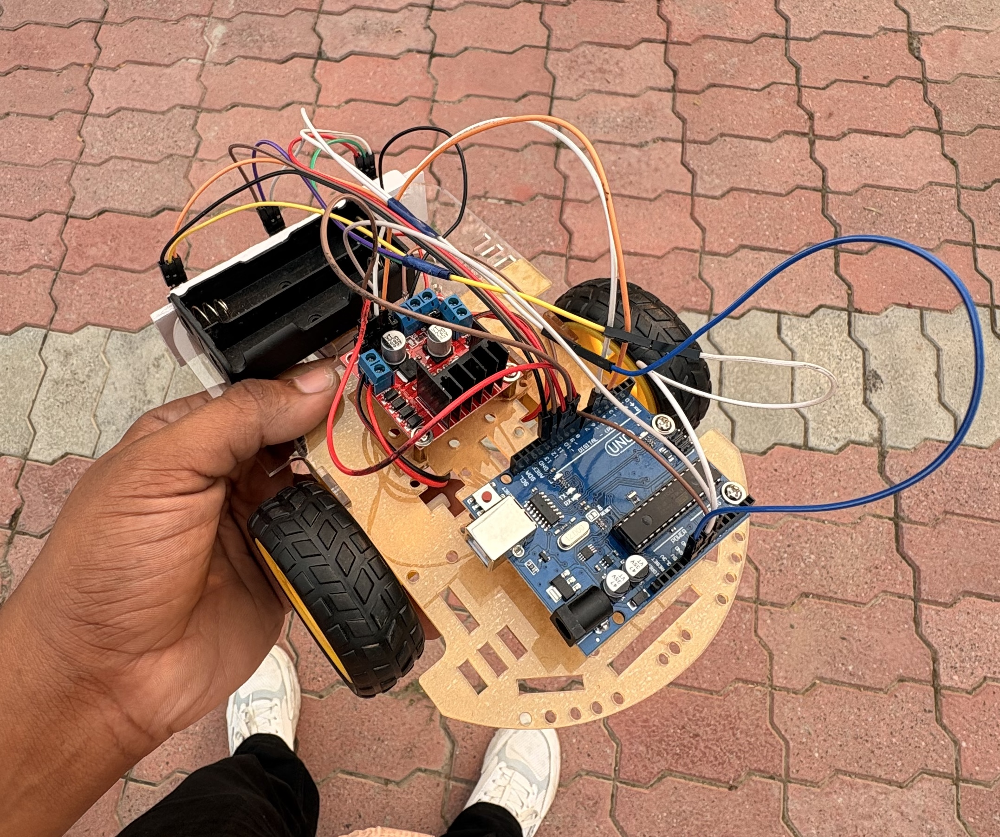
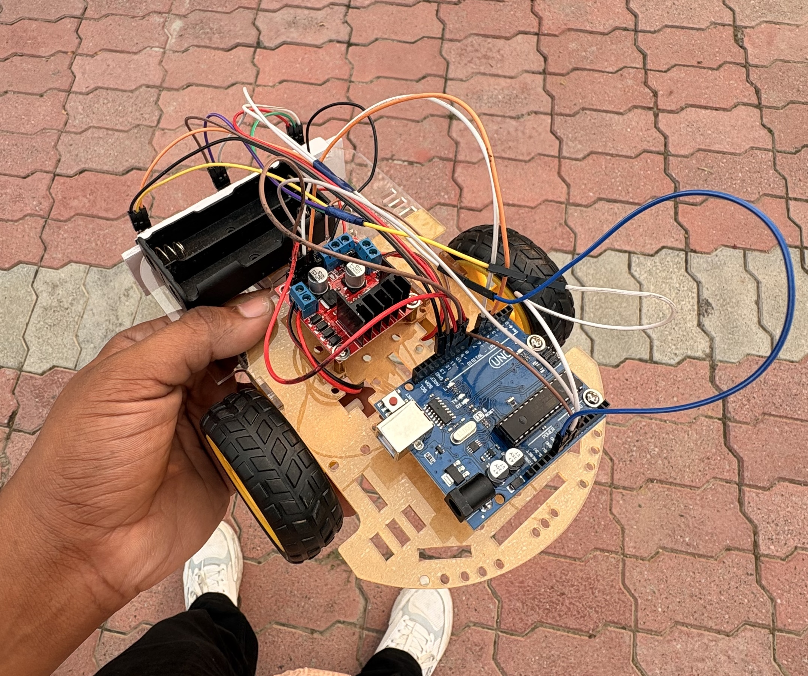

Line Follower Robot – Concept Overview
A Line Follower Robot works on the principle of detecting a path and adjusting its direction accordingly using IR sensors. It is one of the best beginner robotics projects. A line follower robot is an autonomous robot designed to follow a pre-defined path or line on the ground, typically a black line on a white surface or vice versa. It uses IR sensors to detect the line by sensing the reflection of light, and an Arduino UNO acts as the brain, processing these sensor signals to determine the robot’s movement. Based on the sensor input, the Arduino sends commands to a motor driver, which powers the motors to move the robot forward, turn left, or turn right, keeping it on the path. Line follower robots are widely used in educational projects, automated guided vehicles (AGVs), warehouses, and industrial applications.
 
